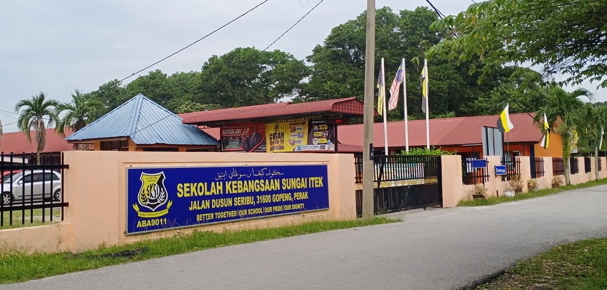
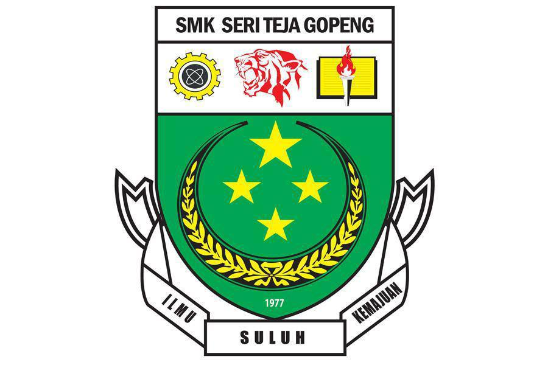
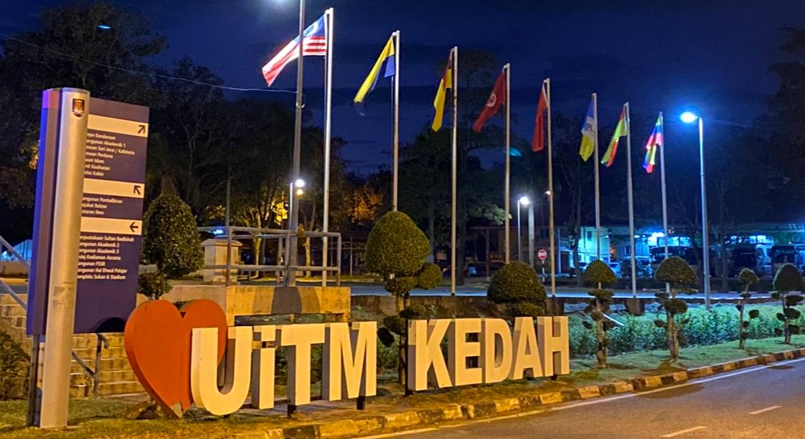

Hello and welcome to my personal website!
My name is An Nuur Zalikha, and I am thrilled to share my journey with you through this website. Here, you'll find insights into my passions, experiences, and professional endeavors. Whether you're here out of curiosity or looking to collaborate, I hope you find inspiration and valuable information. Feel free to explore and get to know me better. Thank you for visiting!
Biodata

| Attribute | Details |
|---|---|
| Name | An Nuur Zalikha binti Amir Abidin |
| Date of Birth | 16 October |
| Address | Lot 914 Jalan Permata Kampung Rawa Baru Gopeng Perak |
| zalikha1610@gmail.com | |
| Phone | 0174420136 |
| anzalikhaa |
Education Background
| Level of Education | Institution | Details |
|---|---|---|
| Early Childhood | Tadika Kemas Kampung Jelintoh | Took my first steps towards learning. |
| Primary Education | Sekolah Kebangsaan Sungai Itek | Developed a strong foundation in academics and personal growth. |
| Secondary Education | Sekolah Menengah Kebangsaan Seri Teja | Completed Sijil Tinggi Pelajaran Malaysia (STPM) with dedication. |
| Higher Education | Universiti Teknologi MARA (UiTM) Kedah | Studying Bachelor of Library Science, specializing in information management and library services. |
Early Childhood at Tadika Kemas Kampung Jelintoh.
Primary Education at Sekolah Kebangsaan Sungai Itek.
Secondary Education at Sekolah Menengah Kebangsaan Seri Teja.
Higher Education at Universiti Teknologi MARA (UiTM) Kedah.